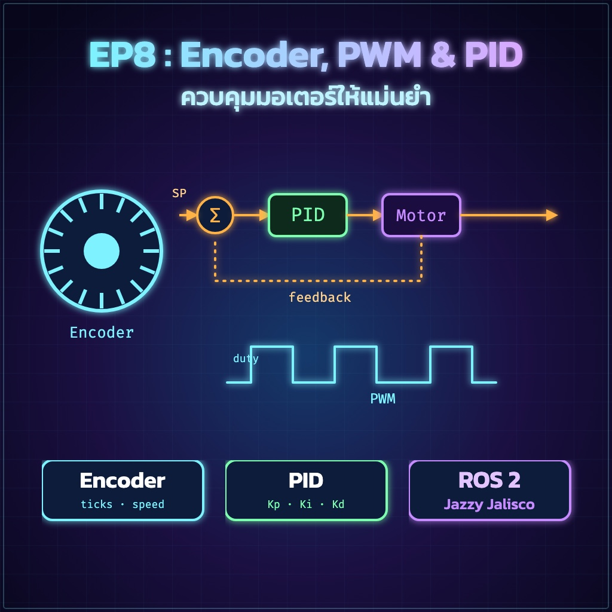
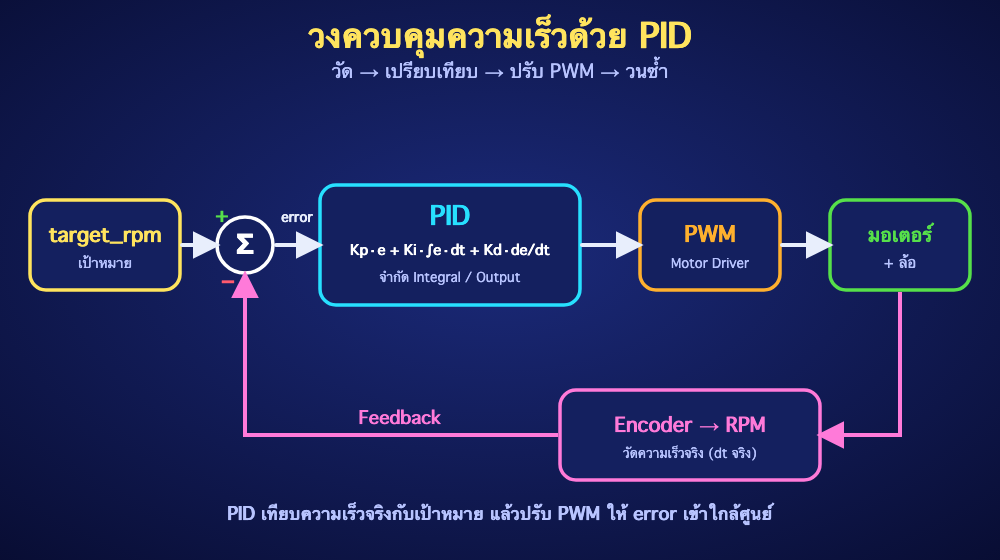

"ROS 2 Jazzy • คำนวณความเร็วด้วยเวลาจริง ใช้ Anti-windup และทดสอบแบบเป็นขั้นตอน"
dt ไม่ผูกกับความเร็ว Loopเมื่อวัดได้ Δtick ในช่วงเวลา Δt:
ticks_per_revolution ต้องตรงกับโหมด Decode (x1/x2/x4) และ Gear ratio ของ Encoder จริง
| สัญญาณ | ตัวอย่าง | หมายเหตุ |
|---|---|---|
| Encoder A/B | PA0 / PA1 | ขาที่รองรับ Interrupt; ตรวจ Voltage |
| PWM | PA8 | ขา Timer PWM |
| DIR1 / DIR2 | PB0 / PB1 | ไป Motor Driver |
| GND | Common Ground | ต้องต่อร่วม MCU–Driver–Encoder |
ตัวอย่าง Arduino Core for STM32 แบบ Single-channel interrupt + อ่านทิศทางจาก B:
volatile แจ้ง Compiler ว่าค่าอาจเปลี่ยนจาก ISR แต่ไม่ได้ทำให้การอ่านหลาย Byte เป็น Atomic จึงคัดลอกภายใต้ noInterrupts()micros() ใช้คำนวณ dt จริง การลบ unsigned รองรับการวนกลับของ Timer ตามกฎ arithmeticerror * dt และถูก Clamp ลด Integral windup เมื่อ Output ชนขีดจำกัดdt จึงไม่เปลี่ยนตามอัตรา Loop แต่ไวต่อ Noise; ของจริงอาจต้อง Low-pass filtertarget_rpm = 0 และยืนยันว่ามอเตอร์หยุดencoder_ticks เพิ่มเมื่อล้อเดินหน้าและลดเมื่อถอยหลังTICKS_PER_REVki=0, kd=0ใช้ Serial Plotter โดยข้อมูลแต่ละบรรทัดเป็น target,rpm,output
นำหลักจาก EP7 มาเพิ่ม Packet สำหรับ Setpoint และ Telemetry:
| CMD | ทิศทาง | Payload |
|---|---|---|
0x10 | ROS 2 → STM32 | target_left_rpm, target_right_rpm |
0x11 | STM32 → ROS 2 | measured_rpm, pwm, error |
| อาการ | แนวทางแก้ |
|---|---|
| RPM กระโดดสูง | ตรวจ TICKS_PER_REV, dt, Noise และสาย Encoder |
| มอเตอร์เร่งสวนทาง | กลับเครื่องหมาย Encoder หรือทิศ Motor ให้ Feedback เป็นลบ |
| Output ค้างสุด | ลด Ki, จำกัด Integral และตรวจ Setpoint/หน่วย |
| Derivative แกว่ง | ลด Kd, กรอง RPM หรือเพิ่มช่วง Sampling |
| อ่าน Tick เพี้ยนสุ่ม | คัดลอกค่าจาก ISR แบบ Atomic และทำ ISR ให้สั้น |